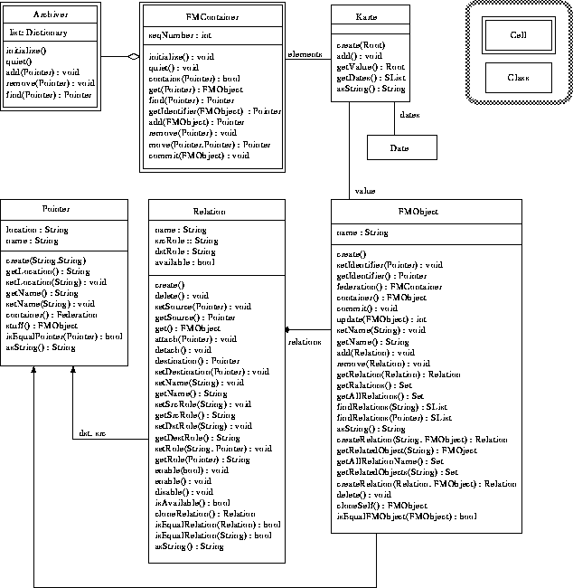

ファシリティ管理基本API
ファシリティ管理APIにおける基本機能を提供する部分の
モデルとして以下に示すオブジェクトモデルを設計し、
これを実装した。今後の節で述べる機能はこれらのAPIを
応用する形で実現される。

Figure: ファシリティ管理 API オブジェクトモデル図
このモデルにより、前項で挙げたそれぞれの機能が
どのように実現されるかを以下に示す。
- リソースの生成
リソースの生成は、リソースとなるオブジェクトを
インスタンシエーションし管理主体に登録することで行う。
リソースとなるオブジェクトは、ファシリティ管理機構で
定められたクラスのサブクラスである必要がある。
本APIの場合、ファシリティ管理の対象となるリソース
として扱いたいオブジェクトは全て、FMObjectクラスを
継承して用いることになる。
ファシリティ管理APIを利用するユーザは、
FMObjectクラス、またはそのサブクラスから
リソースオブジェクトを生成し、ファシリティ管理主体である
FMContainerセル(以下FMContainer)にそのオブジェクトを登録する。
- リソースの削除
リソースの削除は、リソースの登録された管理主体からの
登録の抹消を行うことで実現される。
FMContainerに対しremove(Pointer)を実行することにより、
FMObjectの識別子であるPointerによって指定されたFMObjectを
管理主体から削除する。
- リソースの移動
リソースの移動は、2つの管理主体間でのリソースの
移動によって行われる。
FMContainerのmove(Pointer,Pointer)に対し、
移動対象となるFMObjectのPointerと移動先のFMContainerに
属するFMObjectのPointerを指定することにより、
対象とするFMObjectを移動する。
このとき、Archiverにより移動対象となったFMObjectの
移動前と移動後のPointerを保持することにより、
FMObjectの移動の記録を残し、また移動後のFMObjectを
追跡可能にしている。
- リソースの照会
リソースの照会は、特定の管理主体において、
該当するリソースの検索を可能にすることに
より実現する。
FMContainerに対し、検索対象となるFMObjectの
Pointerを指定することにより、該当する
リソースをFMContainer内より検索し、指定されたものを
エクスポートする。
また、Pointerが不明の場合は現在判明している
FMObjectからRelationを経由していくことで
芋蔓式にオブジェクトの特定を行う。
- リソースのインポート
リソースのインポートは他の管理主体から
エクスポートされたリソースや、新しく生成
されたリソースを自身に登録することで実現する。
FMContainerに対しadd(FMObject)することで、
管理主体内に新しいリソースを随時登録可能である。
また、この時に登録されたリソースに対し
グローバルな識別子(Pointer)が付与される。
- リソースのエクスポート
リソースのエクスポートは、管理主体内の
リソースのコピーを管理主体外に取り出すことを
可能にすることで実現する。
FMContainerに対しget(Pointer)やfind(Pointer)を
行うことで、取り出したいリソースのコピーを
受け取ることができる。
- リソースのアタッチ
リソースのアタッチは、関連を扱うオブジェクトを用意し、
そのオブジェクトによって2つのリソース間を結ぶことで
実現する。
あるリソースに対し、他のリソースをアタッチするには
リソースに対しcreateRelation("RelationName",resource)を
行うことで実現される。これを実行することにより指定された
RelationNameにより2つのリソース間が関係によって
結ばれる。
- リソースのデタッチ
リソースのでタッチは、関連を扱うオブジェクトにより
結ばれた2つのリソースを切り離すことにより実現する。
具体的にはあるリソースに対し、
delete(relation)とすることで、リソース間の関連の
デタッチを実現する。
- リソース公開の活性化・非活性化
リソース公開の活性化・非活性化は
2つのリソース間を結ぶ関連を扱うオブジェクトが
利用可能か不可能かをスイッチングさせることで
実現する。
具体的には非公開にしたいリソースは、
そのリソースの持つ関連すべてに対しinactive()メッセージを送り、
非活性状態とし、関連をたどることを不可能とすることで
リソースの非公開を行う。
Copyright(c) 1996-1998 IPA, ETL, AT21, FSIABC, FXIS, InArc, MRI, NUL, SBC, Sharp, TEC, TIS
Contact: oz-admin@oz.ipa.go.jp